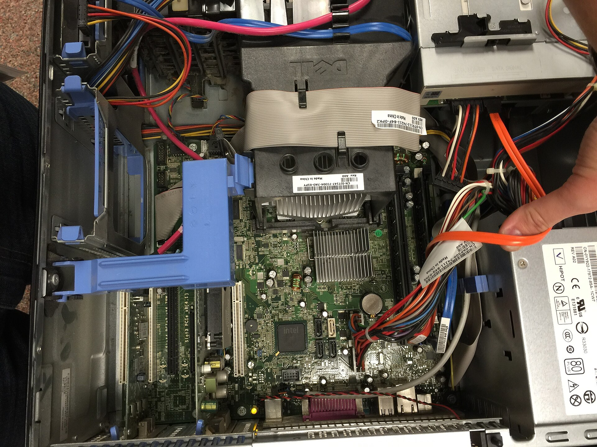

Los idiomas de la computadora
Un mismo saludo en cuatro lenguajes código real
código realPython
CPU: el procesador
El cerebro que ejecuta tu código AMD Ryzen 9 9950X
AMD Ryzen 9 9950XEjecuta, una tras otra, miles de millones de instrucciones por segundo. Cada programa que escribas termina aquí.
Pequeños procesadores dentro del chip. Hoy: de 4 a 16 o más.
Tareas que cada núcleo puede atender a la vez.
Velocidad: 4 GHz = 4 mil millones de ciclos por segundo.
RAM: la memoria de trabajo
Abre programas y mira cómo se llena módulo DDR4
módulo DDR4Guarda lo que estás usando ahora mismo: programas abiertos, pestañas, tu código en ejecución. Es muy rápida pero temporal: al apagar, se borra. Hoy se usan DDR4 y DDR5.
Consumos aproximados, solo para comparar.
Discos: del HDD al NVMe
Donde tus archivos se quedan aunque apagues HDD · disco con platos
HDD · disco con platos SSD SATA
SSD SATA SSD NVMe M.2
SSD NVMe M.2HDD: platos que giran y un brazo que lee. Barato, pero lento.
SSD SATA: chips de memoria, sin partes móviles. Unas 4 veces más rápido.
NVMe M.2: los discos nuevos. Del tamaño de un chicle, conectados directo a la placa por PCIe: hasta 7 000 MB/s (Gen 4) y 14 000 MB/s (Gen 5).
Placa madre y tarjeta de video
La que conecta todo y la que acelera la IA
placa madreEs la "ciudad" donde viven y se comunican la CPU, la RAM, los discos y la tarjeta de video. Trae la UEFI/BIOS, el pequeño programa que enciende la computadora y busca el sistema operativo.
 GPU · RTX 5060 Ti
GPU · RTX 5060 TiLa GPU tiene miles de núcleos pequeños que trabajan en paralelo. Dibuja gráficos y videojuegos, y es la pieza clave para entrenar y ejecutar inteligencia artificial.
Principios de Programación Web
Enciende cada capa de una páginaHTML · CSS · JSCómo se construyen las páginas que ves en el navegador. Tres lenguajes que trabajan juntos: estructura, diseño e interacción.